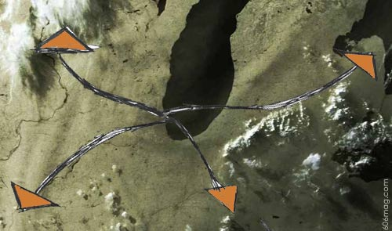

 |
The holidays may be quickly approaching, but there are still a few chances left to get away and explore areas outside the city limits. Everyone knows that once the frigid weather comes, you'll be lucky to actually leave your apartment. Sometimes venturing outside the city is a much-needed cathartic experience, even if it's only for one night, or a weekend at most. And why not explore some off-the-beaten-path places? True, some people's favorite getaway is Wisconsin Dells, but if you've seen one white trash mullethead having breakfast at Perkins before going to Noah's Ark , you've seen them all. So what else is there to do outside the city? Plenty, as it turns out. Gary , IndianaSince Chicago doesn't allow casinos – not yet, anyway – residents have little choice but to travel elsewhere, like to Gary , for a little gambling fun. Clocking in at less than an hour away, you'd be a fool not to go to the Gary casinos. Dotted in Gary's post-industrial landscape are some of the few close-by refuges for the Chicago gambler, such as The Horseshoe, Trump Casino, The Empress and Caesar's. At some of the casinos, the Texas Hold ‘Em players aren't exactly high rollers, but then again, neither are you. Caesars, on the other hand, has a high-stakes area as one of its six themed casinos. If you're up for it, you can go to Caesars “Burning of Rome” Casino. Yes, the theme is the burning of Rome. Caesar's Web site gives only a vague description of what the “Burning of Rome” casino actually entails, but they do mention that, strangely enough, Roman columns are part of the décor. Which means that you'll just have to go see for yourself how the designers of the casino conceptualized the burning of Rome. Getting to Gary is easy enough. By car, take I-90; by train, take the South Shore line. Bear in mind that if you drive and get too drunk to make the haul back to the city, you can always crash at the Trump Hotel. The Amana Colonies, IowaAn apt juxtaposition for the seedy and depraved Gary casino scene lies in Eastern Iowa. The Amana Colonies, adjacent to Iowa City, is one of the few Amish colonies outside of Ohio and southeast Pennsylvania. Billed as “a historic utopian society,” the Amana Colonies were established shortly before the Civil War by a group of German-speaking European settlers who belonged to a religious group known as the Community of True Inspiration. Though operating for the most part as a self-sufficient communal society, residents have been known to venture outside the colony's limits, in full Amish garb, and visit Iowa City's grocery stores and Wal-Mart, lurking among the college transplants. Yes, even Amish people need to shop Wal-Mart. On your way home, make sure to stop at the Iowa I-80 truck stop, the renowned “world's largest truck stop.” Among the seemingly endless aisles of useless Iowa-related items, you'll find a veritable cornucopia of astonishingly ugly t-shirts. Having gone to school in Iowa for four years, I've acquired a couple of the aforementioned t-shirts. The written word doesn't do these gems justice, but just know that one children's-size shirt involves a fantasy-type landscape, the focal point of which is a flying fire-breathing dragon. As far as logistics are concerned, if you don't have a car, you're on your own, or perhaps you can take a horse and buggy around there. Yes, they have horses and buggies. If you do have a car, though, it's a straight shot west on I-80. While you might walk away from the Amana Colonies with little more than a jar of apple butter or some antique furniture – or an ugly t-shirt from the world's largest truck stop – if you're lucky, you'll at least see a different walk of life, and be happy about your own. Paducah, KentuckyIf you're looking for a longer road trip, try Paducah, Ky. It's about five hours from Chicago and easy to get to, straight down I-57. Remember that the ride down will be painfully monotonous, so bring good music, and a lot of it. Located in the heart of hillbilly heaven, the downtown part of “the city” of Paducah is 17 miles from Kentucky Lake and Lake Barkley, both man-made lakes that resulted from the Depression-era Tennessee Valley Authority, which was part of FDR's New Deal. Intended to be a regional planning and development project, the TVA addressed many problems in the Tennessee River Basin typical of the Depression, including devastating floods, badly eroded lands, a deficient economy, and a steady exodus of residents. In its golden age, the TVA brought thousands of new people to Paducah. Today, Paducah is hard to pinpoint. Its slogan is “Quilt City USA … a patchwork of art, history and culture,” but it's more a mix of old, quaint town, old dump and new quaint town. Some parts are completely destitute while other parts are renovated or totally new. Paducah is also known for its burgeoning artists' colony and the Artists' Relocation Program, which provides artists with several business and financial incentives. In the same vein as the TVA's need to kick-start the economy, Paducah attempted to stimulate regional economy and enhance education by building the Four Rivers Center, one of the best indoor theaters in the region, with disparate acts such as Willie Nelson, comedian Steven Wright and the Paducah Symphony Orchestra coming through periodically. Also, as the town's slogan suggests, Paducah is home to the Museum of the American Quilters society, but who cares about that? It's recommended that you stay by Kentucky Lake, but plan ahead with your alcohol: Kentucky's counties are dry and liquor can only be bought at state stores, the closest of which is in Paducah. And, since Paducah is right on the Illinois border, you can visit the nearby thriving metropolis of Metropolis, Ill., and go to the casinos there if Paducah is too lackluster. Indeed, Paducah is a patchwork, but of what, I'm not so sure. |